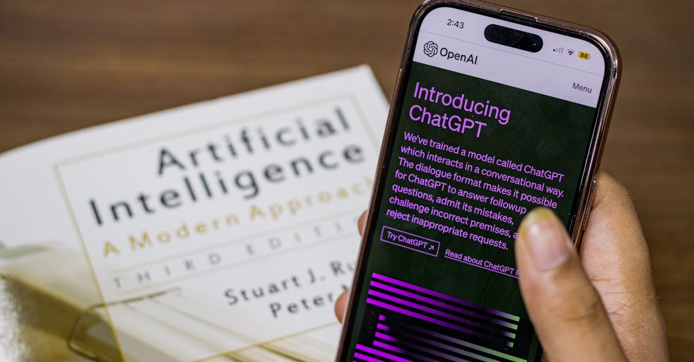

Walmart S'ouvre aux Marchés Obligataires : Une Manœuvre Stratégique Majeure
Dans un mouvement qui a captivé l'attention des marchés financiers mondiaux, le géant de la distribution, Walmart, a annoncé son intention de procéder à une émission d'obligations libellées en dollars américains. Cette opération, d'une envergure significative, concerne des titres de catégorie investment-grade, c'est-à-dire considérés comme offrant un faible risque de défaut. L'émission est prévue pour se décliner en jusqu'à cinq tranches distinctes, une structure qui permet généralement de cibler différents types d'investisseurs et de gérer la maturité des dettes de manière plus fine. Cette décision stratégique de Walmart intervient dans un contexte économique où les entreprises cherchent à sécuriser des financements à des conditions potentiellement favorables, avant d'éventuelles hausses de taux d'intérêt ou une volatilité accrue sur les marchés. L'émission d'obligations est une méthode de financement privilégiée par les grandes corporations pour financer leurs opérations courantes, leurs expansions, ou encore pour refinancer des dettes existantes. Pour Walmart, dont la solidité financière est reconnue, s'aventurer sur les marchés obligataires avec une telle ampleur témoigne d'une stratégie proactive visant à optimiser sa structure de capital et à renforcer sa flexibilité financière. La nature investment-grade des obligations émises est un gage de sécurité pour les investisseurs, qui recherchent des placements stables dans un environnement incertain. Ces émissions visent souvent à financer des projets d'envergure, des acquisitions, ou à maintenir une politique de retour aux actionnaires robuste, tout en conservant une marge de manœuvre pour saisir de nouvelles opportunités de croissance. L'annonce a d'ailleurs suscité un vif intérêt, signalant la confiance des acteurs du marché dans la capacité de Walmart à honorer ses engagements financiers.
👉 À lire : Big Tech: Semaine Cruciale pour le Rallye Boursier et le Forex

Comprendre le Marché des Obligations Investment-Grade
Le terme investment-grade, ou 'qualité d'investissement', est crucial dans le monde de la finance. Il désigne les obligations émises par des entités (entreprises ou gouvernements) dont la solvabilité est jugée élevée par les agences de notation financière comme Standard & Poor's, Moody's ou Fitch. Typiquement, ces obligations reçoivent une note allant de AAA (la plus élevée) à BBB- (la plus basse acceptable pour cette catégorie). Investir dans des obligations investment-grade est souvent perçu comme une stratégie relativement sûre, car le risque que l'émetteur fasse défaut sur ses paiements d'intérêts ou de principal est considéré comme faible. Cela contraste avec les obligations dites 'high-yield' ou 'junk bonds', émises par des sociétés moins stables financièrement et offrant donc des rendements plus élevés pour compenser un risque de défaut plus important. Pour Walmart, émettre des obligations investment-grade signifie qu'elle peut emprunter à des taux d'intérêt plus bas que si elle émettait des titres à plus haut rendement. C'est une stratégie de gestion de la dette intelligente qui minimise le coût du capital. Les investisseurs institutionnels, tels que les fonds de pension, les compagnies d'assurance et les fonds mutuels, sont particulièrement friands de ces titres, car ils correspondent souvent aux critères de sécurité et de stabilité de leurs portefeuilles. La structure en plusieurs tranches permet également de diversifier les échéances, offrant ainsi des options aux investisseurs ayant des horizons de placement différents. Une tranche à court terme pourrait intéresser ceux qui cherchent une liquidité rapide, tandis qu'une tranche à long terme conviendrait aux investisseurs visant un revenu stable sur une période prolongée. En somme, cette émission confirme la perception de Walmart comme un pilier de l'économie, capable de naviguer les complexités des marchés financiers avec succès.
👉 À lire : Japon : Assurance vie freine ses achats de dette
Implications pour les Stratégies d'Investissement Traditionnelles
L'émission d'obligations par un géant comme Walmart a des répercussions directes sur les portefeuilles d'investissement traditionnels. Pour les investisseurs recherchant la sécurité, ces nouvelles obligations représentent une opportunité d'ajouter un actif de qualité, offrant un rendement potentiellement supérieur à celui des dépôts bancaires ou des fonds monétaires, tout en maintenant un risque maîtrisé. Les gestionnaires de fonds dédiés aux obligations investment-grade vont probablement intégrer ces titres dans leurs allocations, cherchant à capter le coupon offert et à bénéficier de la stabilité inhérente à Walmart. La diversification est un autre avantage clé. En ajoutant des obligations d'une entreprise aussi massive et bien établie, les investisseurs peuvent réduire la volatilité globale de leur portefeuille. Cela est particulièrement pertinent dans un climat où les marchés boursiers peuvent connaître des secousses imprévues. Les différentes maturités proposées par Walmart permettent d'ajuster la sensibilité du portefeuille aux variations des taux d'intérêt. Une stratégie prudente pourrait consister à répartir l'investissement sur plusieurs tranches, afin de lisser le risque lié aux fluctuations futures des taux. De plus, l'existence de ces obligations peut influencer les rendements d'autres titres similaires. Si l'offre est importante, elle pourrait légèrement comprimer les rendements d'obligations investment-grade existantes, mais elle élargit surtout l'univers d'investissement disponible. Pour les investisseurs individuels, cela peut signifier une meilleure accessibilité à des placements de qualité institutionnelle, souvent via des fonds communs de placement ou des ETF obligataires. La décision de Walmart de lever des fonds via des obligations plutôt que par d'autres moyens, comme l'émission d'actions, suggère une volonté de ne pas diluer la propriété de l'entreprise tout en renforçant sa structure financière. Cela est généralement bien accueilli par les actionnaires existants.
La Technologie au Service de l'Analyse Financière : Pertinence pour le Trading Forex
Dans le monde actuel, marqué par l'accélération des flux d'informations et la complexité croissante des marchés, l'analyse des grandes opérations financières comme celle de Walmart prend une dimension nouvelle. Les événements macroéconomiques, les annonces de grandes entreprises, et les mouvements sur les marchés obligataires ont des répercussions indirectes mais notables sur le marché des changes (Forex). Par exemple, une émission obligataire réussie par une entreprise américaine majeure peut renforcer la confiance dans le dollar américain, influençant ainsi les paires de devises majeures comme l'EUR/USD ou l'USD/JPY. C'est là que les outils d'analyse avancée, souvent alimentés par l'intelligence artificielle, montrent toute leur valeur. Ces technologies peuvent traiter et corréler des quantités massives de données – des rapports financiers d'entreprises, des indicateurs macroéconomiques, des nouvelles économiques mondiales, et même le sentiment du marché – bien plus rapidement qu'un analyste humain. Pour un trader Forex, comprendre comment une émission obligataire d'une entreprise comme Walmart, même si elle n'est pas directement liée au Forex, peut affecter la force d'une devise est essentiel. L'IA peut identifier des schémas et des corrélations subtiles qui échapperaient à l'œil humain. Elle peut évaluer l'impact potentiel d'une telle nouvelle sur les flux de capitaux internationaux, la perception du risque des investisseurs, et par conséquent, sur les taux de change. Un système de trading automatisé, comme ceux que nous développons chez ForexBot AI, est conçu pour intégrer ces analyses complexes et réagir en temps réel. Alors que les marchés traditionnels réagissent à l'annonce de Walmart, un agent IA peut déjà évaluer les implications potentielles pour le Forex et ajuster les stratégies de trading en conséquence, cherchant à capitaliser sur les mouvements anticipés ou à se protéger contre la volatilité accrue. La capacité à traiter l'information de manière globale et à en extraire des signaux exploitables est un avantage concurrentiel indéniable.
Comment l'IA et le Trading Automatisé S'adaptent aux Annonces Financières
L'annonce de Walmart est un cas d'étude parfait pour illustrer comment les systèmes de trading automatisé, propulsés par l'intelligence artificielle, opèrent dans un environnement d'information dense. Contrairement aux traders humains qui peuvent être submergés par le volume d'actualités ou influencés par des biais émotionnels, un agent IA est programmé pour analyser les données de manière objective et systématique. L'IA peut scanner en continu les flux d'informations financiers, identifier des événements clés comme l'émission d'obligations de Walmart, et évaluer leur importance relative. Elle peut ensuite croiser cette information avec des centaines d'autres variables : données économiques, taux d'intérêt, performances sectorielles, analyses techniques, et même des indicateurs de sentiment sur les réseaux sociaux. Le véritable pouvoir réside dans la capacité de l'IA à prédire les conséquences potentielles de ces événements sur différents marchés, y compris le Forex. Par exemple, si l'émission de Walmart suggère une confiance accrue dans l'économie américaine, un agent IA pourrait anticiper un renforcement du dollar. Il pourrait alors ajuster ses paramètres de trading pour privilégier des positions longues sur le dollar face à d'autres devises jugées plus fragiles. Cette adaptation dynamique est cruciale. Les marchés financiers sont en perpétuelle évolution, et une stratégie de trading statique est vouée à l'échec. Les agents IA, grâce à leur apprentissage continu (machine learning), peuvent affiner leurs modèles prédictifs au fil du temps, devenant de plus en plus performants. Ils peuvent identifier des corrélations émergentes entre les marchés obligataires, actions et devises, et exploiter ces relations pour générer des opportunités de profit. L'objectif n'est pas de réagir aux nouvelles après coup, mais d'anticiper les mouvements du marché en se basant sur une analyse profonde et multidimensionnelle des informations disponibles. C'est cette proactivité algorithmique qui distingue le trading automatisé par IA dans le paysage financier moderne.

Diversification des Actifs : Une Leçon de l'Émission Obligataire de Walmart
L'émission d'obligations par Walmart nous rappelle une leçon fondamentale en investissement : l'importance cruciale de la diversification. Bien que Walmart soit une entreprise solide, aucun actif n'est exempt de risque. En proposant différentes tranches d'obligations, Walmart elle-même applique un principe de diversification des échéances pour mieux gérer sa dette. De la même manière, les investisseurs avisés ne mettent pas tous leurs œufs dans le même panier. Ils répartissent leur capital entre différentes classes d'actifs : actions, obligations, immobilier, matières premières, et même des instruments plus complexes comme les produits dérivés ou les cryptomonnaies. Le marché Forex, par sa nature, offre déjà une forme de diversification intrinsèque, car il permet d'investir dans différentes paires de devises, chacune ayant ses propres moteurs économiques et sa propre sensibilité aux événements mondiaux. Cependant, la diversification ne s'arrête pas là. Au sein même de la classe d'actifs 'devises', il est judicieux de ne pas se concentrer uniquement sur une ou deux paires. Un portefeuille Forex équilibré pourrait inclure des positions sur des devises majeures (USD, EUR, JPY), des devises de matières premières (AUD, CAD) et potentiellement des devises émergentes, chacune réagissant différemment aux cycles économiques et aux politiques monétaires. Pour les traders qui utilisent des stratégies automatisées, la diversification peut être intégrée au niveau de l'algorithme. Par exemple, un agent IA pourrait être programmé pour gérer simultanément plusieurs stratégies de trading, chacune ciblant une paire de devises spécifique ou un type de condition de marché particulier. L'émission d'obligations par Walmart, en tant qu'événement macroéconomique majeur, peut influencer la performance de diverses devises. Un portefeuille diversifié, géré intelligemment par une IA, est mieux armé pour naviguer ces fluctuations, capturant les opportunités tout en atténuant les risques potentiels liés à un événement spécifique ou à la performance d'un seul marché.
Le Rôle des Agences de Notation et leur Impact sur le Marché
L'aspect investment-grade de l'émission obligataire de Walmart souligne le rôle essentiel des agences de notation financière. Ces organismes, tels que Moody's, S&P et Fitch, jouent un rôle de gardiens de la confiance sur les marchés financiers. En attribuant des notes aux émetteurs d'obligations, elles fournissent aux investisseurs une évaluation indépendante de la qualité de crédit et du risque de défaut. Une note élevée, comme celle que Walmart obtient généralement, rassure les investisseurs et permet à l'entreprise d'emprunter à des taux d'intérêt plus bas. Inversement, une dégradation de note peut entraîner une chute du prix de l'obligation et une augmentation du coût du financement pour l'entreprise. L'indépendance et la méthodologie de ces agences sont souvent sujettes à débat, notamment après les crises financières passées. Cependant, leur influence reste considérable. Les fonds d'investissement institutionnels, contraints par leurs mandats, ne peuvent souvent investir que dans des titres jugés investment-grade. Ainsi, la note attribuée par ces agences est un facteur déterminant pour l'accès au financement des entreprises. Pour le marché Forex, l'évaluation de la santé économique et de la stabilité d'un pays, souvent corrélée à la qualité de crédit de son gouvernement et de ses grandes entreprises, est primordiale. Une dégradation de la note d'un pays peut entraîner une dépréciation de sa monnaie. Inversement, une amélioration ou le maintien d'une note élevée peut soutenir la devise. Les algorithmes de trading sophistiqués intègrent les analyses et les décisions des agences de notation comme l'une des nombreuses variables influençant les taux de change. Bien que l'émission de Walmart concerne des obligations d'entreprise, la perception globale de la solidité économique américaine, renforcée par de telles opérations, peut indirectement soutenir le dollar américain. Les traders Forex, qu'ils soient humains ou IA, surveillent ces indicateurs pour anticiper les mouvements de devises.
Perspectives Futures : Comment Walmart et le Marché Obligataire Évoluent
L'émission obligataire de Walmart n'est pas un événement isolé, mais s'inscrit dans une tendance plus large de gestion active du bilan des entreprises et d'adaptation aux conditions de marché. À l'avenir, nous pouvons nous attendre à ce que de grandes entreprises continuent d'utiliser les marchés obligataires pour financer leur croissance et optimiser leur structure de capital. La durabilité et les critères ESG (Environnementaux, Sociaux et de Gouvernance) deviennent également des facteurs de plus en plus importants dans l'émission d'obligations. Bien que l'information initiale ne le mentionne pas, il est probable que Walmart, comme d'autres géants, intègre ces considérations dans ses futures émissions. Pour les investisseurs, cela signifie une analyse plus complexe, où la performance financière doit être évaluée aux côtés de l'impact social et environnemental. Du côté du marché Forex, l'évolution des taux d'intérêt directeurs des banques centrales reste le principal moteur. Les décisions de la Réserve Fédérale américaine, de la Banque Centrale Européenne et d'autres institutions auront un impact majeur sur les paires de devises. Les émissions obligataires comme celle de Walmart peuvent fournir des indices sur la santé économique sous-jacente et influencer les anticipations de politique monétaire. Les traders Forex, en particulier ceux utilisant des stratégies automatisées, devront rester vigilants. Les algorithmes d'IA continueront d'évoluer, intégrant de nouvelles sources de données et des modèles d'analyse plus sophistiqués. La capacité à traiter l'information financière globale, des émissions obligataires d'entreprises aux décisions de politique monétaire, sera essentielle pour identifier les opportunités de trading rentables sur le marché des changes. La volatilité peut persister, mais pour ceux équipés des bons outils, elle représente aussi une source d'opportunités. L'IA offre une voie pour naviguer cette complexité avec plus d'efficacité et de précision, transformant la manière dont nous abordons les marchés financiers mondiaux.
Conclusion : Naviguer la Complexité avec l'IA
L'annonce de l'émission obligataire investment-grade par Walmart met en lumière la dynamique constante des marchés financiers. Elle souligne l'importance pour les investisseurs de comprendre les stratégies des grandes entreprises, le fonctionnement des marchés de dette, et les facteurs qui influencent la confiance et la stabilité économique. Pour les marchés traditionnels, cela représente une opportunité d'investissement à faible risque et une confirmation de la solidité de Walmart. Mais au-delà des implications directes pour le marché obligataire, cet événement nous rappelle l'interconnexion des marchés financiers mondiaux. Les mouvements de capitaux, la perception du risque, et les anticipations de politique monétaire peuvent avoir des effets en cascade, y compris sur le marché du Forex. C'est dans ce contexte complexe et en évolution rapide que les solutions de trading automatisé par IA, comme celles proposées par ForexBot AI, prennent tout leur sens. En traitant une quantité massive de données, en identifiant des corrélations subtiles entre différents marchés, et en exécutant des stratégies de trading de manière autonome et 24h/24, nos agents IA sont conçus pour naviguer cette complexité. Ils transforment des annonces comme celle de Walmart en opportunités potentielles, en analysant leur impact indirect sur les devises et en ajustant les stratégies de trading en temps réel. Alors que le paysage financier continue de se transformer, l'intelligence artificielle offre une approche plus sophistiquée, plus rapide et plus objective pour le trading, permettant aux investisseurs de mieux capitaliser sur les opportunités tout en gérant les risques inhérents aux marchés mondiaux. L'avenir du trading est intelligent, automatisé, et accessible.